Ingénieur Biomédical Biomedical Engineer
Ingénieur biomédical, j'ai construit mon parcours en accumulant des passions au fil de mes expériences. Parti de l'ingénierie automobile, j'y ai découvert le goût pour l'acquisition, le traitement et la visualisation de données. Ma participation à l'ouverture d'un laboratoire dédié à la mobilité réduite m'a permis de me rapprocher de projets au service des autres. J'y ai développé des compétences clés en gestion de projet et communication, tout en découvrant une passion pour l'ingénierie biomédicale, que j'ai approfondie avec un master en parallèle de ma profession. Biomedical engineer, I have built my career by developing new passions through each experience. Starting in automotive engineering, I discovered my interest in data acquisition, processing and visualisation. My involvement in launching a laboratory dedicated to assistive mobility brought me closer to projects at the service of others. There, I developed key skills in project management and communication, while discovering a passion for biomedical engineering, which I deepened through a master's degree alongside my profession.
Voir les projets Browse projects
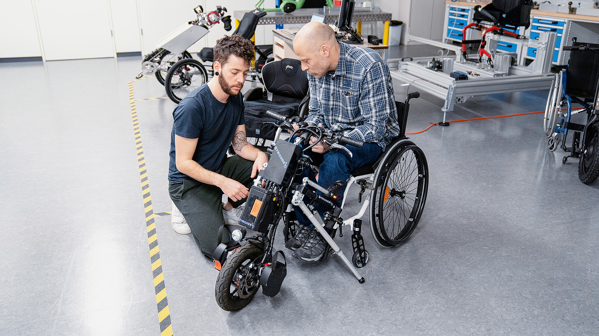
IngénierieEngineering
Formé à l'ingénierie biomédicale à l'université de Berne de 2022 à 2024, j'ai eu la chance d'effectuer des projets dans plusieurs laboratoires de l'ARTORG Center et des stages d'observation à l'Inselspital (cardiologie, chirurgie orthopédique). Mon attrait pour la mécanique m'a naturellement orienté vers le major biomécanique, avec un intérêt particulier pour les technologies cardiovasculaires. Mon travail de master, réalisé au laboratoire d'hémodynamique et de technologie cardiovasculaire de l'EPFL, a obtenu la note maximale, donné lieu à une présentation à la conférence internationale ARTERY25 à Valence, et initié l'écriture d'un article scientifique actuellement en cours de publication. Trained in biomedical engineering at the University of Bern from 2022 to 2024, I had the opportunity to carry out projects in several ARTORG Center laboratories and complete observation internships at the Inselspital (cardiology, orthopaedic surgery). My interest in mechanics naturally led me toward the biomechanics major, with a particular focus on cardiovascular technologies. My master's thesis, conducted at the EPFL Hemodynamics and Cardiovascular Technology Laboratory, received the highest grade, led to a presentation at the international ARTERY25 conference in Valencia, and initiated a scientific article currently under publication.
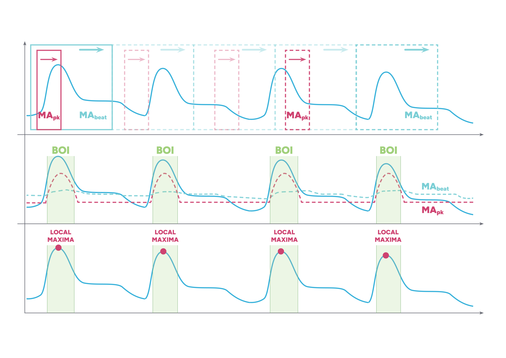
Data science clinique Clinical data science
Construction d'un dataset hémodynamique original à partir de MIMIC-III, base de données relationnelle clinique développée par le MIT, regroupant données démographiques et signaux physiologiques pour la prédiction du débit cardiaque. Un algorithme de sélection, traitement et contrôle qualité des signaux a été développé pour automatiser et garantir la fiabilité du pipeline de génération. Réalisé dans le cadre de ma thèse de master à l'EPFL. Construction of an original hemodynamic dataset from MIMIC-III, a clinical relational database developed by MIT, combining demographic data and physiological signals for cardiac output prediction. A dedicated algorithm for signal selection, processing, and quality control was developed to automate and ensure the reliability of the generation pipeline. Completed as part of my Master's thesis at EPFL.
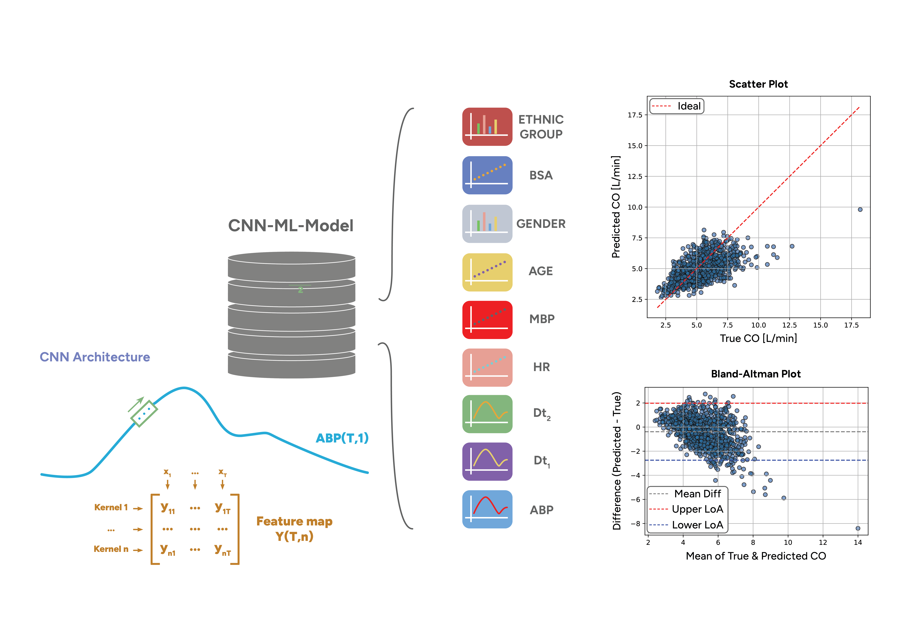
IA & machine learning clinique Clinical AI & machine learning
Développement d'un framework de deep learning pour la conception, le tuning et l'entraînement de modèles CNN et RNN (LSTM, GRU) appliqués à la prédiction du débit cardiaque. Le framework intègre validation croisée, tuning d'hyperparamètres et génération automatisée des résultats. Ce travail a conclu ma thèse de master à l'EPFL et donné lieu à un article scientifique en cours de parution. Development of a deep learning framework for designing, tuning, and training custom CNN and RNN models (LSTM, GRU) applied to cardiac output prediction. The framework integrates cross-validation, hyperparameter tuning, and automated result generation. This work concluded my Master's thesis at EPFL and resulted in a scientific article currently under review.
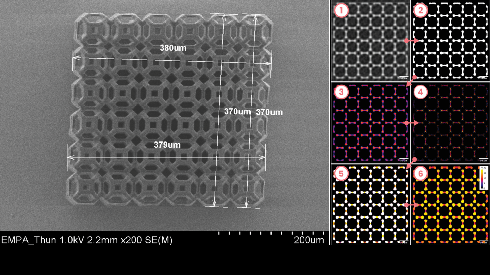
Métamatériaux & fabrication avancée Metamaterials & advanced fabrication
Fabrication d'un échantillon de métamatériau en polymère IP-S par lithographie à écriture directe par laser (DLW) en salle blanche, suivi d'une caractérisation mécanique par nanoindentation et visualisation par SEM. Une analyse micro-CT a permis de reconstruire la structure 3D et d'estimer le module de Young à partir de la densité relative. Un pipeline d'analyse d'image a ensuite été développé pour le contrôle qualité de l'épaisseur des parois via segmentation et calcul d'épaisseur locale. Fabrication of an IP-S polymer metamaterial sample via direct laser writing (DLW) lithography in cleanroom conditions, followed by mechanical characterization through nanoindentation and SEM visualization. Micro-CT analysis enabled 3D structure reconstruction and Young's modulus estimation from relative density. An image analysis pipeline was then developed for wall thickness quality control using segmentation and local thickness computation.
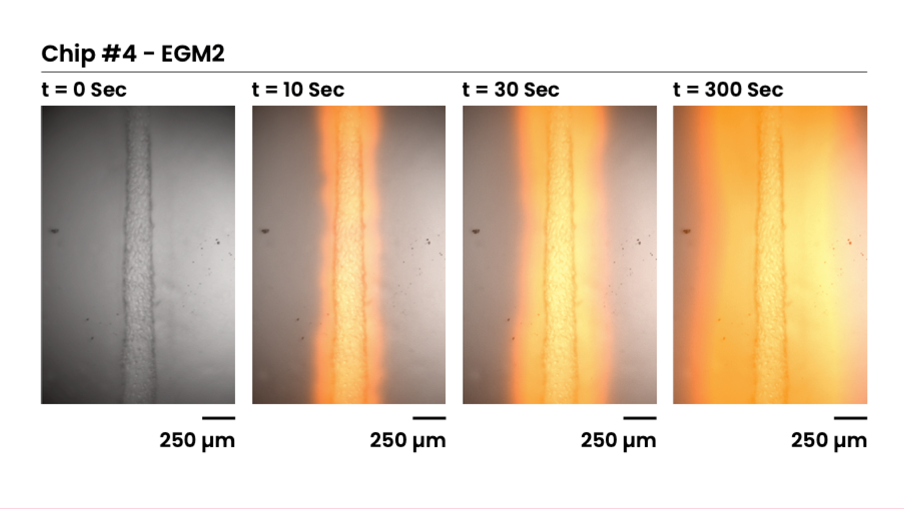
Microfluidique & organes sur puce Microfluidics & organ-on-chip
Fabrication de puces microfluidiques en PDMS par soft lithographie, développement d'un vaisseau biologique à partir de cellules HUVEC, et test de perméabilité sous microscope à fluorescence comparant deux conditions de croissance : EGM2 seul et milieu enrichi en VEGF. Fabrication of PDMS microfluidic chips via soft lithography, development of a biological vessel from HUVEC cells, and fluorescence microscopy permeability assay comparing two growth conditions: EGM2 alone and VEGF-supplemented medium.
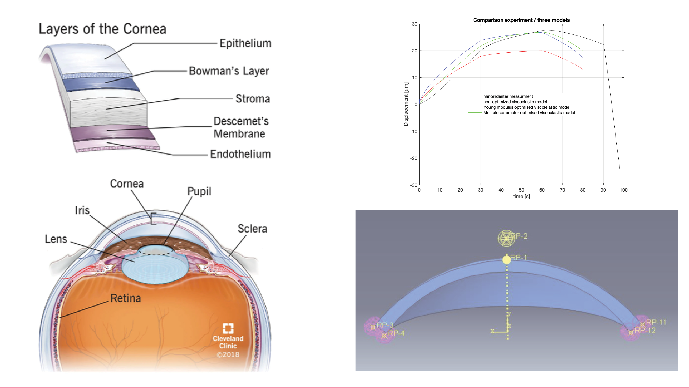
Biomécanique & modélisation Biomechanics & modelling
Caractérisation expérimentale et numérique de la cornée porcine par nanoindentation. Le protocole couvre la préparation et l'excision de l'échantillon, la mesure des propriétés viscoélastiques du tissu, puis la modélisation par éléments finis sous Abaqus. Plusieurs modèles ont été développés et optimisés via un script Python, et validés par comparaison avec la solution analytique de Hertz. Experimental and numerical characterization of porcine cornea through nanoindentation. The protocol covers sample preparation and excision, viscoelastic tissue property measurement, and finite element modelling in Abaqus. Several models were developed and optimized via a Python script, then validated against the Hertz analytical solution.
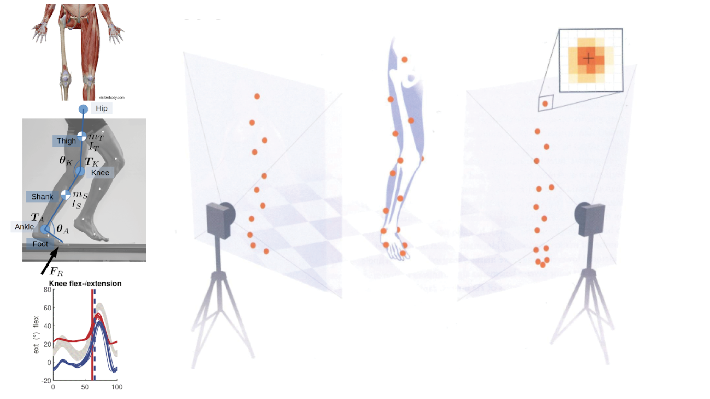
Biomécanique du mouvementMovement Biomechanics
Implémentation sous MATLAB d'un pipeline complet d'analyse biomécanique d'un squat : calcul de la flexion du genou par cinématique inverse et du moment articulaire par dynamique inverse, validés contre le logiciel VICON. MATLAB implementation of a full biomechanical analysis pipeline for squat movement: knee flexion calculation via inverse kinematics and joint moment via inverse dynamics, validated against VICON software.
IngénierieEngineering
La participation à l'ouverture du SCI-Mobility Lab, laboratoire dédié au développement de la mobilité réduite à l'interface entre l'ingénierie mécanique et la réhabilitation, a été une expérience fondatrice de mon parcours. J'y ai tenu des rôles variés (acquisition de l'instrumentation, recherche de fonds, gestion de projets) en étant responsable du suivi terrain et du reporting à ma hiérarchie. Ce laboratoire pluridisciplinaire, réunissant ingénieurs, chercheurs en réhabilitation et physiothérapeutes, m'a appris à adapter ma communication à des interlocuteurs très différents. J'y ai également développé des partenariats externes durables, et assuré la communication numérique du laboratoire à travers illustrations, images et vidéos. My involvement in launching the SCI-Mobility Lab, a laboratory dedicated to assistive mobility at the intersection of mechanical engineering and rehabilitation, was a defining experience in my career. I held varied roles (equipment acquisition, fundraising and project management) while being responsible for on-site follow-up and reporting to management. This multidisciplinary environment, bringing together engineers, rehabilitation researchers and physiotherapists, taught me to adapt my communication to very different audiences. I also developed lasting external partnerships, and managed the laboratory's digital communication through illustrations, images and outreach videos.
Tests & évaluation Testing & evaluation
Gestion complète d'un projet d'évaluation des risques dynamiques de systèmes de traction électrique couplables à des fauteuils roulants manuels. Conception et réalisation de crash tests et de tests de stabilité au basculement, puis d'un protocole de tests sur piste comparant trois produits, dans le respect des normes ISO 7176. Tests utilisateurs menés avec des personnes en situation de handicap pour une évaluation orientée usage. Rédaction, illustration et production intégrale d'un article publié en français, anglais et allemand dans une revue spécialisée. Full management of a dynamic risk assessment project for electric propulsion systems attachable to manual wheelchairs. Design and execution of crash tests and tip-over stability tests, followed by a track testing protocol comparing three products, in compliance with ISO 7176 standards. User testing conducted with people with disabilities for a user-centered evaluation. Full authorship of an article published in French, English, and German in a specialized journal, including writing, illustration, and testing.
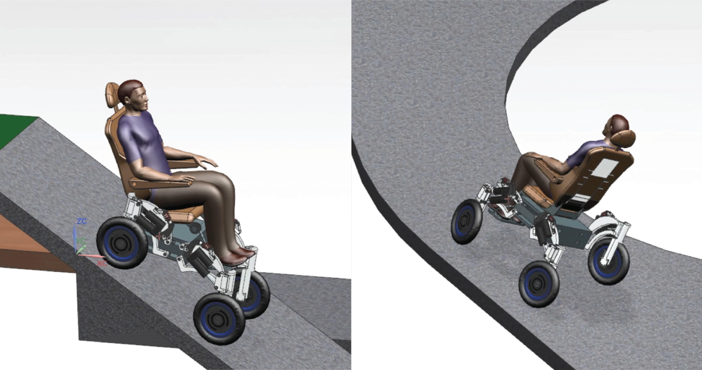
Etude de faisabilitéFeasibility study
Étude exploratoire et analyse de faisabilité pour un concept de fauteuil roulant à quatre bras indépendants, conçu pour compenser les forces sur le tronc et adapter dynamiquement la position du siège. En charge de la recherche de fonds, de la révision du concept mécanique, de l'analyse de risques et de la recherche de partenaires industriels. Revue approfondie de la littérature et des brevets pour affiner le positionnement du projet. À mon initiative, deux personnes en situation de handicap ont été intégrées à l'équipe pour garantir une approche orientée besoins réels : conception et conduite d'entretiens et d'un questionnaire ciblé ayant permis de collecter les retours de 30 participants concernés. Exploratory research and feasibility study for a four-independent-arm wheelchair concept designed to compensate trunk forces and dynamically adapt seat position. Responsibilities included fundraising, mechanical concept revision, risk analysis, and industrial partner outreach. In-depth literature and patent review to refine project positioning. On my initiative, two people with disabilities were integrated into the team to ensure a needs-driven approach: design and execution of interviews and a targeted questionnaire collecting responses from 30 concerned participants.
Conception mécaniqueMechanical design
Conception, validation et construction d'un banc de test pour caractériser la rigidité de châssis de fauteuils roulants manuels. Analyse des forces et torsions du cadre par jauges de contrainte sur les plans frontal et transversal, permettant une mesure manuelle visuelle de la torsion. Supervision de l'intégration d'un système de détection automatique via Raspberry Pi, développé par des étudiants. Design, validation, and construction of a test bench to characterize the stiffness of manual wheelchair frames. Analysis of frame forces and torsion using strain gauges on frontal and transversal planes, enabling manual visual torsion measurement. Supervision of the integration of an automated detection system via Raspberry Pi, developed by students.
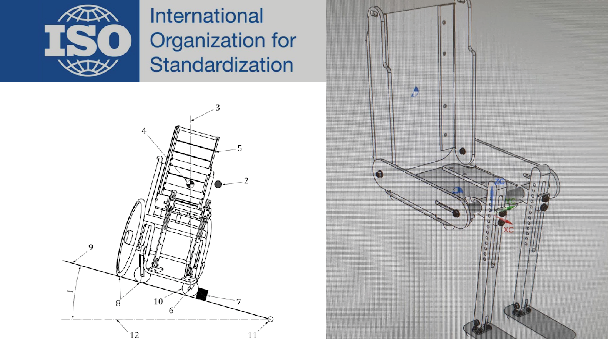
Conception mécaniqueMechanical design
Conception et modélisation CAD d'un mannequin de test pour fauteuils roulants, conforme aux normes ISO 7176. Le mannequin intègre des compartiments modulables au niveau du tronc et des jambes pour l'ajout de plaques de fonte, permettant l'adaptation du poids selon les configurations de test. Visite de l'usine Invacare Alber (DE) pour l'étude de leur processus de test et de validation. CAD design and modelling of a test dummy for wheelchairs, compliant with ISO 7176 standards. The dummy features modular compartments at trunk and leg level for cast iron plates, allowing weight adjustment across test configurations. Visit to the Invacare Alber factory (DE) to study their testing and validation process.
Conception et supervisionDesign and supervision
Test de fatigue mécanique sur la potence d'un tricycle thérapeutique suite à l'intégration d'un nouveau système torpedo. Gestion du projet, préparation du banc de test et mesure des forces appliquées sur les poignées lors d'essais réels. Conception du protocole de fatigue mécanique et installation de jauges de contrainte pour la validation du test. Mechanical fatigue testing of a therapeutic tricycle handlebar stem following the integration of a new torpedo system. Project management, test bench preparation, and measurement of handlebar forces during real-use trials. Design of the fatigue test protocol and strain gauge installation for test validation.
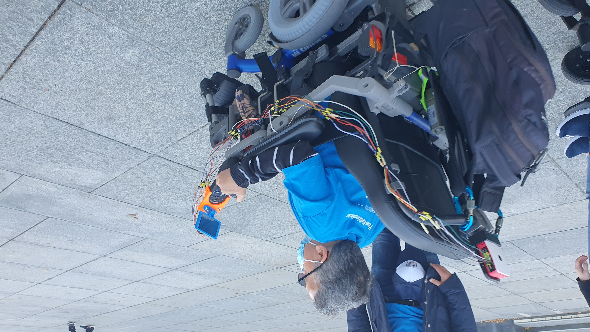
Conception 3D et électronique3D Design & Electronics
Participation au hackathon HackaHealth 2021 de l'ETH Zurich. Développement d'un système de caméra de recul pour fauteuil roulant électrique : caméra fixée à l'arrière du siège reliée à un écran de monitoring sur la commande, via Raspberry Pi. Conception mécanique et modélisation 3D des supports caméra et écran, installation et tests du système. Participation in the HackaHealth 2021 hackathon at ETH Zurich. Development of a rear-view camera system for electric wheelchairs: a camera mounted at the back of the seat connected to a monitoring screen on the joystick unit via Raspberry Pi. Mechanical design and 3D modelling of camera and screen mounts, system installation and testing.
IngénierieEngineering
J'ai débuté ma carrière d'ingénieur à l'Institut pour l'Énergie et la Mobilité (IEM) de la Haute Ecole Spécialisée Bernoise (HESB), sur des projets touchant à l'automobile et à l'agriculture, avec comme dénominateur commun la collecte et le traitement de données. J'y ai contribué à plusieurs projets Innosuisse, avec pour rôle principal la création de prototypes (proof of concept) et la conduite de recherches exploratoires suivies de documentations techniques, en amont de projets d'envergure. I began my engineering career at the Institute for Energy and Mobility (IEM) at Bern University of Applied Sciences (BFH), working on projects in the automotive and agricultural sectors, with data collection and processing as a common thread. I contributed to several Innosuisse projects, with a primary focus on prototype development (proof of concept) and exploratory research followed by technical documentation, upstream of larger-scale projects.
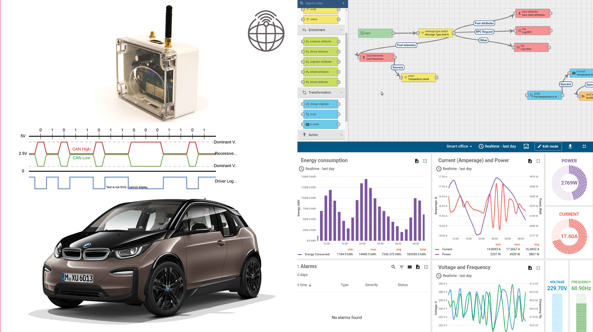
Décryptage de système de communication & IOTDecoding the communication system & IOT
Acquisition, décodage et visualisation de données sur véhicules électriques : BMW i3, Nissan Leaf, Mercedes eCitaro, et petits véhicules électriques via un convertisseur de signaux analogiques vers CAN (Würth CAN Modul SB ICCS 9). Collecte des signaux via la prise EOBD sur un microcontrôleur Python, analyse des communications CAN-BUS et des messages UDS (Unified Diagnostic Services), et décodage des PID (Parameter IDs) pour extraire des paramètres interprétables (couple, état batterie, etc.). Traitement des trames brutes pour restituer des grandeurs physiques cohérentes, transmission des données via MQTT (protocole de messagerie IoT), et conception d'un dashboard de visualisation des KPI (Key Performance Indicators) du véhicule. Data acquisition, decoding, and visualization on electric vehicles: BMW i3, Nissan Leaf, Mercedes eCitaro, and small electric vehicles via an analog-to-CAN signal converter (Würth CAN Modul SB ICCS 9). Signal collection via the EOBD port on a Python microcontroller, CAN-BUS and UDS (Unified Diagnostic Services) message analysis, and PID (Parameter IDs) decoding to extract interpretable parameters (torque, battery state, etc.). Raw frame processing to recover meaningful physical values, data transmission via MQTT (IoT Messaging Protocol), and design of a vehicle KPI (Key Performance Indicators) dashboard.
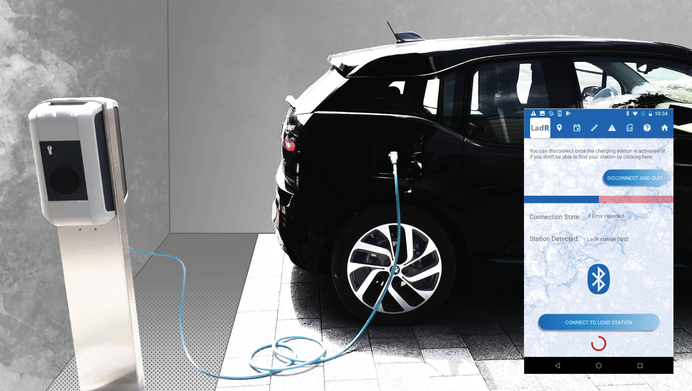
Application mobile & proof of concept Mobile application & proof of concept
En 2018, le manque de bornes de recharge et leurs coûts élevés freinaient l'adoption des véhicules électriques. LadR est un concept de réseau de recharge communautaire, sur le modèle d'Airbnb, permettant à des particuliers de louer leur borne à d'autres utilisateurs. Pour s'affranchir des coûts de connexion réseau, un système de réservation et d'activation via Bluetooth Low Energy (BLE) a été développé, fonctionnant sans connexion internet. Conception du réseau et de la logique d'échange de données BLE, rédaction du business plan, développement d'une application smartphone et d'un prototype fonctionnel de réservation et d'activation de borne. In 2018, the lack of charging infrastructure and high installation costs were limiting EV adoption. LadR is a community-based charging network concept, inspired by Airbnb, enabling private owners to rent out their charging station to other users. To eliminate network connectivity costs, a reservation and activation system via Bluetooth Low Energy (BLE) was developed, operating fully offline. Network and BLE data exchange logic design, business plan writing, smartphone app development, and a functional prototype for station reservation and activation.

Système embarqué & IoT Embedded system & IoT
Développement d'un dispositif de suivi agricole basé sur un microcontrôleur Python fixé au châssis de machines agricoles. Localisation et suivi GPS de la machine, et positionnement spatial du module pour le suivi d'outils montés sur tracteur. Analyse vibratoire par accéléromètre et transformée de Fourier rapide (FFT) pour extraire des fréquences fondamentales (régime moteur, état marche/arrêt). Transmission des données via LoRaWAN, collecte et visualisation sur Thingsboard. Development of an agricultural monitoring device based on a Python microcontroller mounted on farm machinery. GPS tracking and spatial positioning of the module for mounted tool monitoring. Vibration analysis via accelerometer and Fast Fourier Transform (FFT) to extract fundamental frequencies (engine speed, on/off state). Data transmission via LoRaWAN, collection and visualization on Thingsboard.
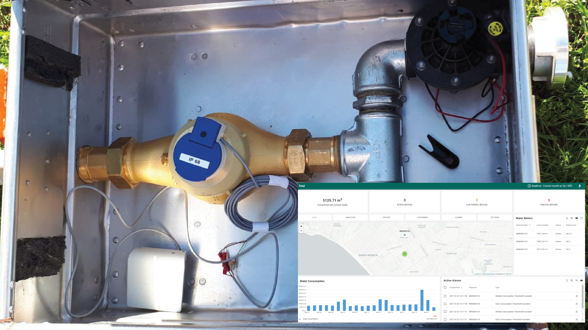
Smartfarming & IoT Smartfarming & IoT
Intégration au projet IoT AgroLoRa de l'IEM, plateforme de monitoring agricole existante (humidité du sol, pluviométrie). Développement d'un système de vannes d'irrigation intelligentes pilotables à distance via dashboard, avec possibilité d'automatisation basée sur les données de la plateforme. Programmation d'un microcontrôleur Python pour le pilotage des vannes et la remontée d'état (ouverture/fermeture) via LoRaWAN. Conception du dashboard de supervision et de contrôle. Integration into the IEM AgroLoRa IoT platform, an existing agricultural monitoring system (soil moisture, rainfall). Development of a smart irrigation valve system remotely controllable via dashboard, with automation capabilities based on platform data. Python microcontroller programming for valve actuation and status feedback (open/closed) via LoRaWAN. Design of the supervision and control dashboard.
Engagements & créationsCommitments & Creations
Au-delà des compétences techniques, j'ai toujours eu à coeur de m'engager pour des projets qui font sens pour moi. Cela m'a conduit à participer à plusieurs projets pédagogiques, visant l'enseignement technique et la découverte du métier d'ingénieur. Parallèlement, j'ai développé des compétences en illustration et design numérique au fil de mes projets professionnels. Cette envie de créer dépasse aussi le cadre professionnel, avec le mélange entre l'ingénierie et le traitement audio, ma passion depuis l'adolescence. Beyond technical skills, I have always been driven to engage in projects that matter to me. This led me to contribute to several educational projects aimed at teaching engineering and making the profession more accessible. Along the way, I developed skills in illustration and digital design through my professional work. This creative drive extends beyond the professional sphere, with a passion for combining engineering and audio processing, a hobby I have pursued since adolescence.
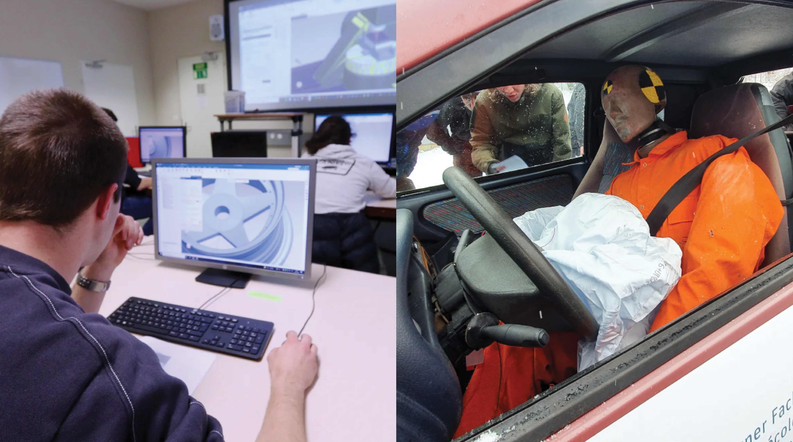
Organisation d'évenementsEvent organization
Chargé de repenser le recrutement en Bachelor d'ingénierie automobile, jusque-là limité à une journée portes ouvertes peu engageante pour les jeunes. J'ai conçu et organisé le "Junior Certificate" : un camp de découverte de 2 jours sur inscription, offrant à une vingtaine de jeunes une immersion concrète dans les laboratoires de l'école (création de jantes par CAD, construction d'un moteur Stirling, crash test, analyse d'accident). Conception du programme, participation à la gestion du budget et prise en charge de la logistique (hôtel, repas, transport), accompagnement de chaque enseignant dans le design de son activité. Animation personnelle d'un atelier de thermodynamique avec construction d'un moteur Stirling DIY. Gestion de la communication sur les réseaux sociaux et production de contenu photo/vidéo promotionnel. Tasked with rethinking the automotive engineering Bachelor recruitment strategy, previously limited to a traditional open day offering little engagement for prospective students. I designed and organized the "Junior Certificate": a 2-day discovery camp with limited enrollment, offering around twenty motivated students a concrete hands-on immersion across the school's laboratories (CAD wheel design, Stirling engine build, crash test, accident analysis). Full program design, contribution to budget management and logistics coordination (hotel, meals, transport), and support to each teacher in designing their activity. Personal delivery of a thermodynamics workshop featuring a DIY Stirling engine build. Social media communication management and promotional photo/video content production.
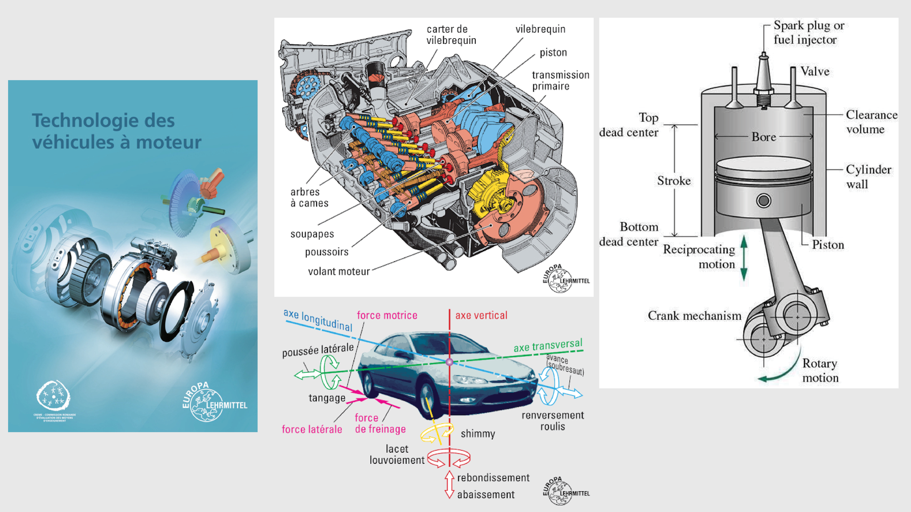
Création de cours en ligneOnline lessons creation
La Haute École Spécialisée Bernoise impose une année de pratique en atelier aux étudiants sans CFC dans un domaine automobile, les laissant seuls face à l'apprentissage théorique, sans garantie d'encadrement ni d'égalité des chances. Face à cette situation, j'ai initié et développé un cours en ligne sur Moodle couvrant les chapitres clés de la technique automobile, basé sur le référentiel CFC "Technologies des véhicules à moteur" (Europa Lehrmittel), avec accord de l'éditeur pour l'utilisation des illustrations. Le cours intègre flashcards, quiz, textes à trous, rapports avec feedback personnalisé et un système de gamification par trophées pour encourager l'apprentissage autonome. The Bern University of Applied Sciences requires students without a vocational diploma in an automotive-related field to complete one year of workshop practice, leaving them solely responsible for their theoretical preparation with no guaranteed support or equal opportunities. Faced with this situation, I initiated and developed an online course on Moodle covering the key chapters of automotive technology, based on the CFC reference textbook "Technologies des véhicules à moteur" (Europa Lehrmittel), with the publisher's agreement for illustration use. The course includes flashcards, quizzes, fill-in-the-blank exercises, reports with personalized feedback, and a trophy-based gamification system to foster independent learning.
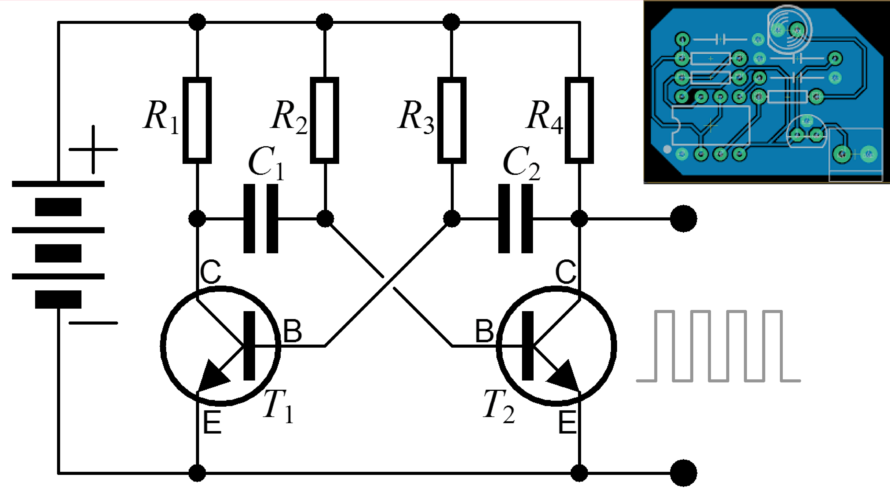
Électronique & circuits Electronics & circuits
Encadrement d'un laboratoire d'électrotechnique introduisant les étudiants à l'électronique à travers la réalisation d'un multivibrateur astable. Présentation technique du circuit, simulation sous TINA (Texas Instruments), introduction au design de PCB double face sous Eagle avec règles de dimensionnement, atelier de soudure de composants, et formation à la rédaction technique structurée sous LaTeX. Supervision of an electrical engineering lab introducing students to electronics through the design and build of an astable multivibrator. Circuit theory presentation, simulation in TINA (Texas Instruments), introduction to double-sided PCB design in Eagle with dimensioning rules, component soldering workshop, and training in structured technical documentation with LaTeX.
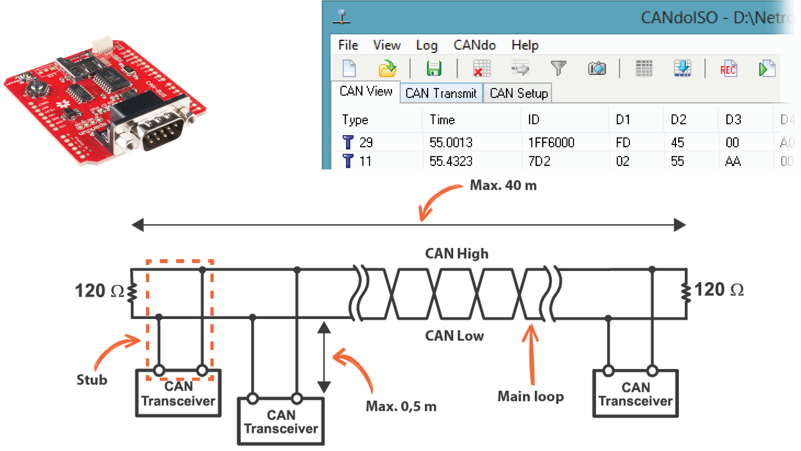
Électronique automobile Automotive electronics
Encadrement d'un laboratoire d'électronique véhicule couvrant les protocoles de communication par bus de données en environnement automobile. Après un bloc théorique sur les différents bus disponibles, les étudiants travaillaient sur Arduino SparkFun équipé d'un CAN-BUS shield pour communiquer avec un véhicule réel. Activité pratique de décodage de trames CAN sur scooter électrique pour extraire des paramètres clés du véhicule. Supervision of a vehicle electronics lab covering data bus communication protocols in automotive environments. Following a theoretical block on available bus systems, students worked on a SparkFun Arduino with a CAN-BUS shield to communicate with a real vehicle. Hands-on activity involving CAN frame decoding on an electric scooter to extract key vehicle parameters.

Visuels produits pour mon projet de master autour des données cliniques, du traitement du signal au machine learning.Visuals produced for my Master's project on clinical data, from signal processing to machine learning.
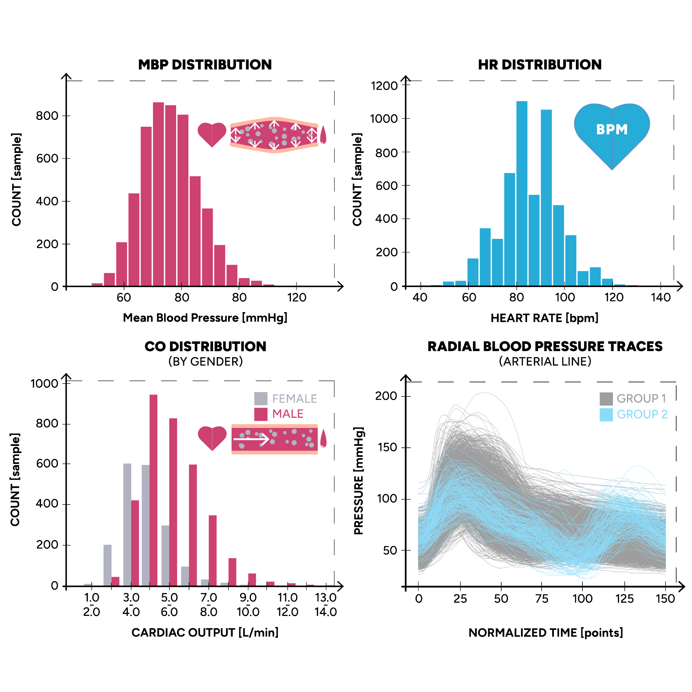
Sélection de graphiques produits lors de projets d'études, allant de créations entièrement réalisées sous Adobe aux visualisations Python (Matplotlib, Seaborn) retouchées et mises en forme.A selection of charts produced during academic projects, ranging from fully redesigned Adobe illustrations to Python visualizations (Matplotlib, Seaborn) refined and polished.
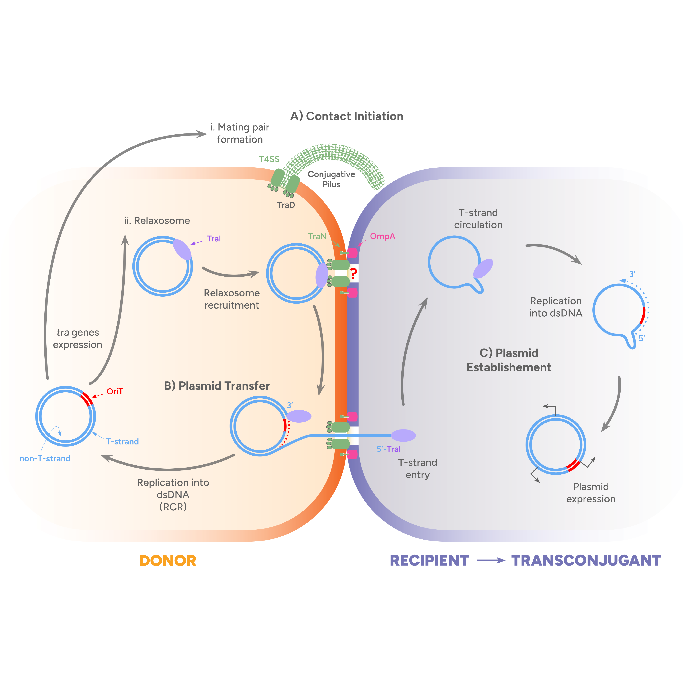
Illustrations de vulgarisation sur les mécanismes d'échange de plasmides, réalisées pour un article scientifique en microbiologie.Science communication illustrations on plasmid exchange mechanisms, created for a microbiology research article.
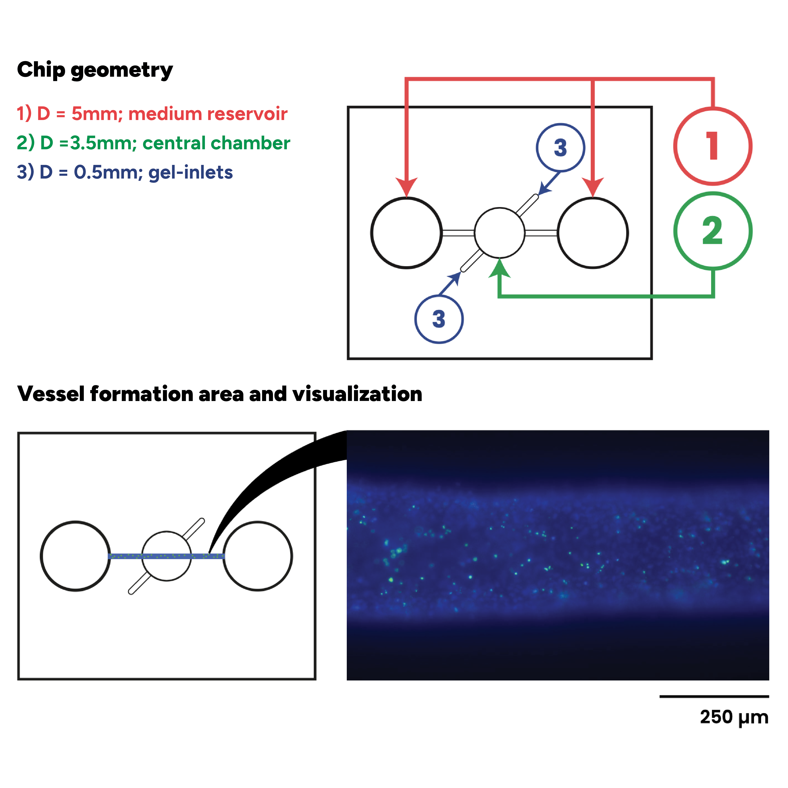
Combinaison d'images de microscopie à fluorescence et de schémas explicatifs, réalisée pour illustrer un projet de biomicrofluidique.A mix of fluorescence microscopy images and explanatory diagrams, created to support a biomicrofluidics project.

Graphiques réalisés pour un article technique présentant des tests comparatifs sur trois systèmes de traction de fauteuils roulants.Charts created for a technical journal article presenting comparative tests on three wheelchair propulsion systems.
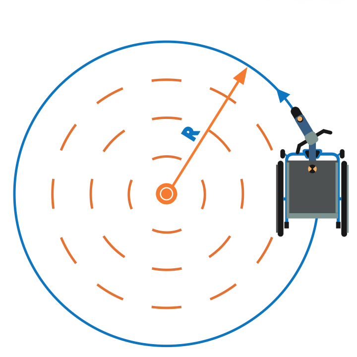
Schémas descriptifs des parcours routiers réalisés lors d'une étude comparative entre différents systèmes de traction électrique pour fauteuils roulants.Descriptive diagrams of the road test courses conducted during a comparative study of electric propulsion systems for wheelchairs.
Deux animations réalisées pour une vidéo explicative présentant un projet du SCI-Mobility Lab : un fauteuil roulant électrique à bras indépendants conçu pour réduire les contraintes mécaniques sur le tronc de l'utilisateur.Two animations created for an explanatory video presenting a SCI-Mobility Lab project: an electric wheelchair with independent arms designed to reduce mechanical stress on the user's trunk.
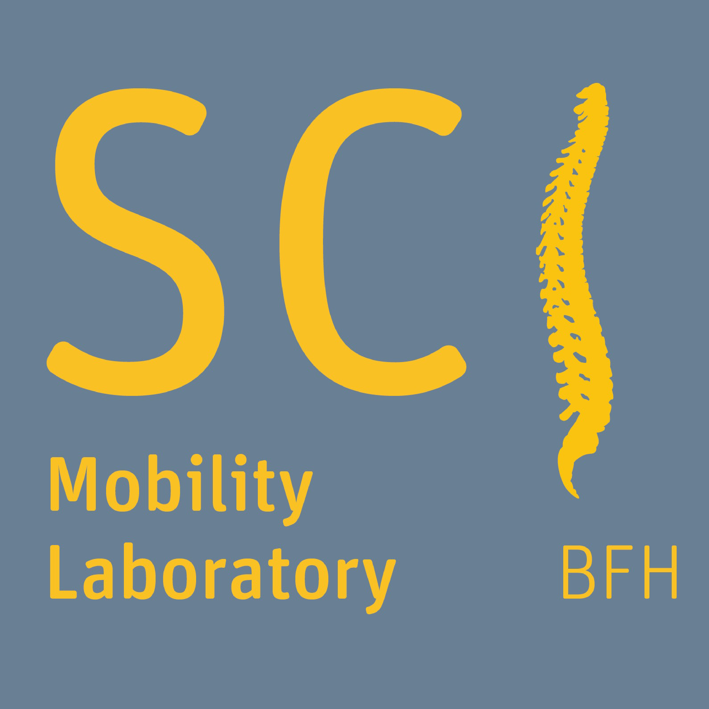
Logo réalisé à l'occasion de l'inauguration du SCI-Mobility Lab, où la colonne vertébrale remplace le "i" de SCI (Spinal Cord Injury).Logo created for the inauguration of the SCI-Mobility Lab, where the spine replaces the "i" in SCI (Spinal Cord Injury).
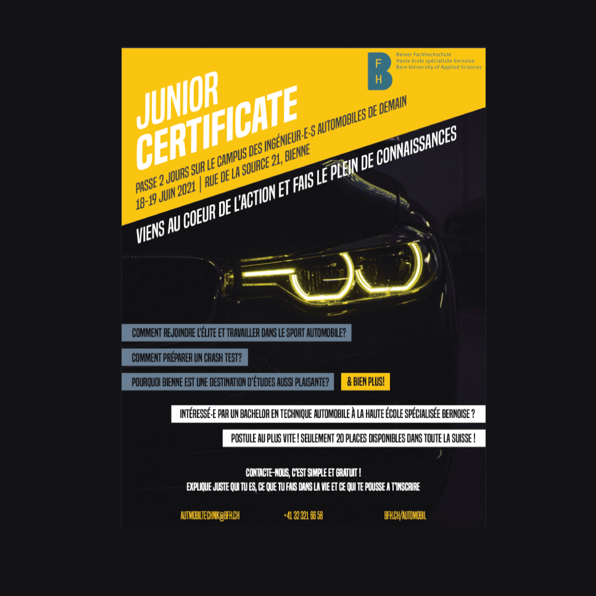
Affiche et flyers réalisés en français et en allemand pour la première édition du camp "Junior Certificate" de la Haute École Spécialisée Bernoise.Poster and flyers designed in French and German for the first edition of the Bern University of Applied Sciences "Junior Certificate" camp.
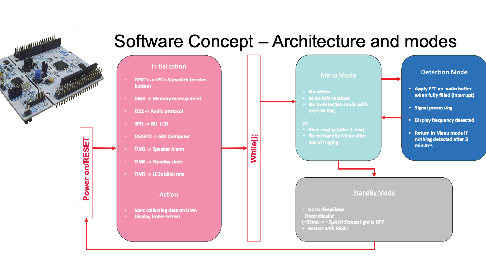
Programmation & audio Programming & audio
Développement d'un accordeur chromatique fonctionnel sur microcontrôleur STM32 (Nucleo F446RE) en C, avec détection de fréquence fondamentale par FFT. Intégration d'un micro MEMS via protocole I2S, décharge du CPU par DMA en continu, affichage sur écran LCD via SPI et interface graphique PC via USART. Conception d'un pipeline logiciel d'optimisation (filtrage, padding, downsampling) et d'une gestion de batterie multi-modes. Development of a functional chromatic tuner on STM32 microcontroller (Nucleo F446RE) in C, with fundamental frequency detection via FFT. MEMS microphone integration via I2S protocol, continuous CPU offloading via DMA, LCD display via SPI and PC graphical interface via USART. Design of an optimization software pipeline (filtering, padding, downsampling) and multi-mode battery management.
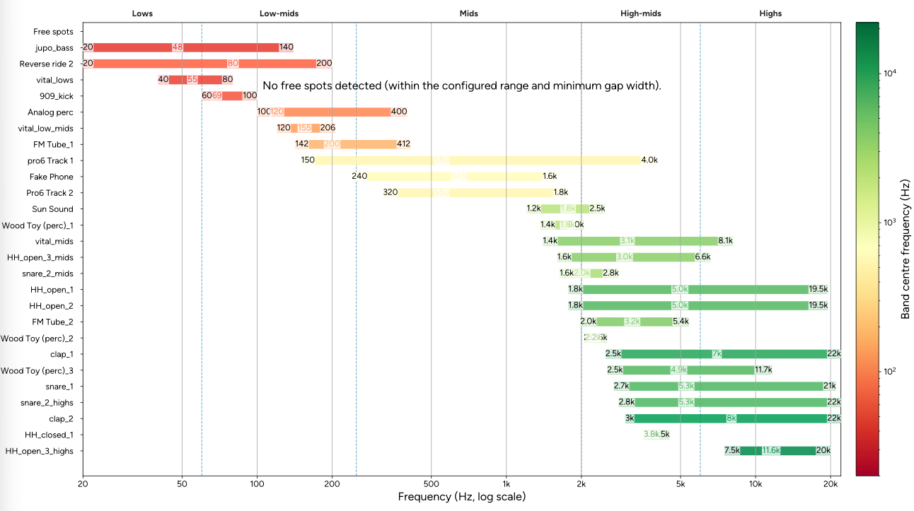
Analyse spectrale & mixage Spectral analysis & mixing
Développement d'un outil Python de visualisation des collisions fréquentielles pour le mixage musical. L'outil analyse et affiche les bandes de fréquences occupées par chaque instrument, identifie les zones de collision et met en évidence les plages disponibles, facilitant l'équilibrage tonal et le sound design dans des productions complexes. Development of a Python tool for visualizing frequency collisions in music mixing. The tool analyzes and displays the frequency bands occupied by each instrument, identifies collision zones and highlights available ranges, supporting tonal balance and sound design in complex productions.
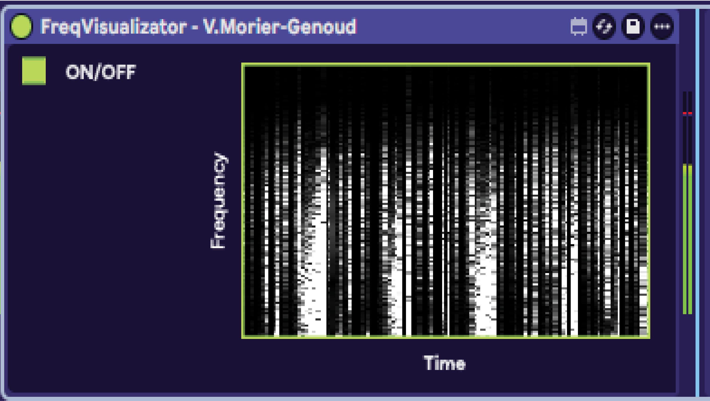
Développement Max4Live Max4Live development
Développement d'un plug-in Max for Live (M4L) pour Ableton Live 11, offrant une visualisation spectrale temps réel par analyse FFT. Au-delà de l'aspect technique, le projet explore le potentiel artistique de Max for Live : des visualisations 2D lisibles (spectre fréquentiel, comparable aux représentations utilisées en ornithologie) jusqu'à des visuels 3D génératifs répondant en temps réel à la musique en entrée. Development of a Max for Live (M4L) plug-in for Ableton Live 11, providing real-time spectral visualization via FFT analysis. Beyond the technical aspect, the project explores the artistic potential of Max for Live: from readable 2D visualizations (frequency spectrum, similar to representations used in ornithology) to generative 3D visuals responding in real time to the audio input.
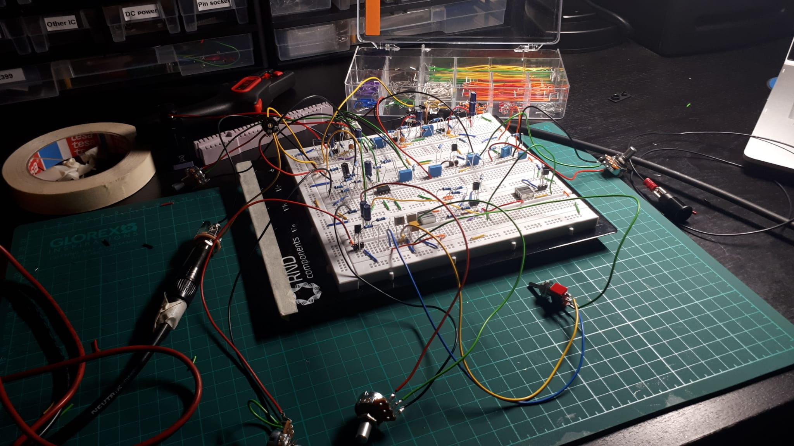
Électronique analogique Analog electronics
Recréation sur breadboard de la pédale Fuzz "Big Muff" d'Electro-Harmonix à partir de son schéma électrique original. Au-delà du câblage du circuit, le projet a impliqué l'intégration des ports audio, des potentiomètres de gain et de tonalité, ainsi que la gestion des bruits parasites liés à l'alimentation. La pédale fonctionnelle obtenue permet la permutation de différents transistors, ouvrant la possibilité de tester des combinaisons sonores inédites. Breadboard recreation of the Electro-Harmonix "Big Muff" fuzz pedal from its original circuit schematic. Beyond basic wiring, the project involved integrating audio ports, gain and tone potentiometers, and managing power supply noise. The functional pedal allows transistor swapping, enabling experimentation with unique distortion combinations.
Contact
N'hésitez pas à me contacter pour toute opportunité professionnelle, collaboration ou question. Feel free to reach out for any professional opportunity, collaboration or question.